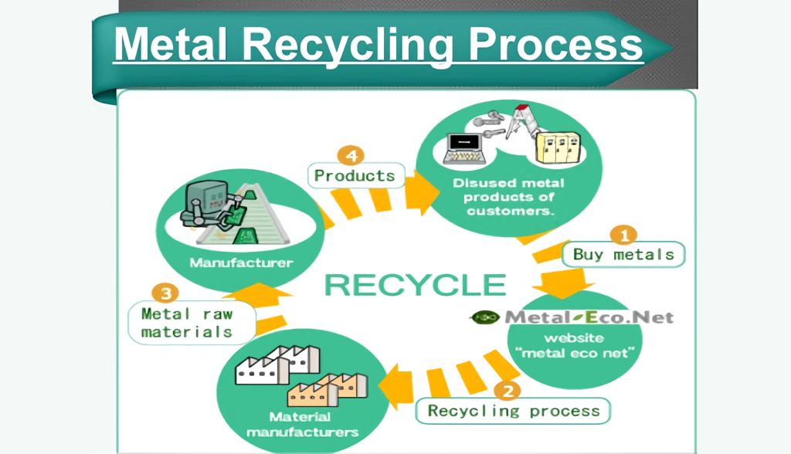

Problems:
Metal scrapyards have become more and more prevalent as people choose to simply throw away their metal possessions instead of recycling them.
Recycling Metal:
Because metals can be recycled repeatedly without degrading their properties, metals are one of the most efficiently recycled materials. When metals are recycled, they go through an eight step process. First, the metal is collected from designated recycling bins and organized according to metal type. After that, the non-recyclable metal is separated from the recyclable metal, and then the metal is compacted to better conserve space on the conveyor belts. The metal is then shredded, then melted down and purified. The purification process includes various methods including electrolysis, magnetic systems, and more specialized methods depending on the type of metal. The metal is then cooled and solidified with chemicals into bars to control density and other properties. Finally, the metal bars are packaged and transported to factories and other locations to be reused.

Return Home to Learn More
Problems:
Metal scrapyards have become more and more prevalent as people choose to simply throw away their metal possessions instead of recycling them.